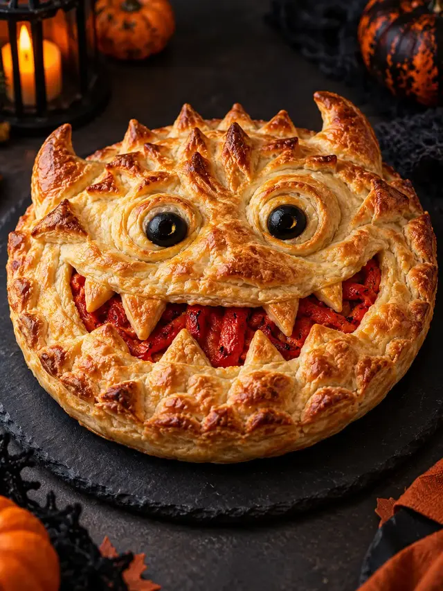
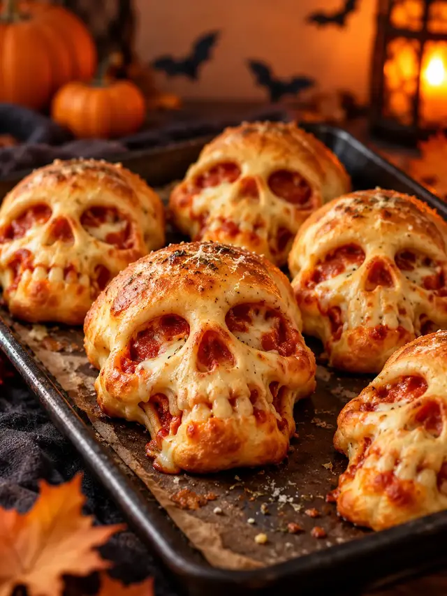
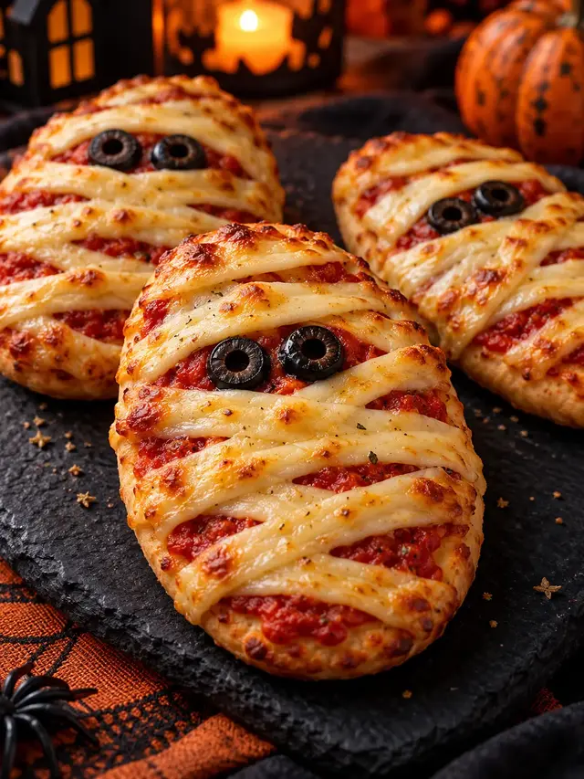

BITE-SPARKS STORIES
Short recipe stories
Visual, self-contained recipe guides with practical cooking cues and a link to each full recipe.

Monster Face Pie: A Halloween Dinner Story
A quick visual guide to building a crisp, golden Monster Face Pie with a rich beef-and-vegetable filling.

Pizza Skulls: A Halloween Snack Story
A quick visual guide to making crisp, cheese-filled Pizza Skulls for a Halloween snack table.

Mummy Pizza: A Halloween Dinner Story
A quick visual guide to making a crisp personal Mummy Pizza with mozzarella bandages and olive eyes.